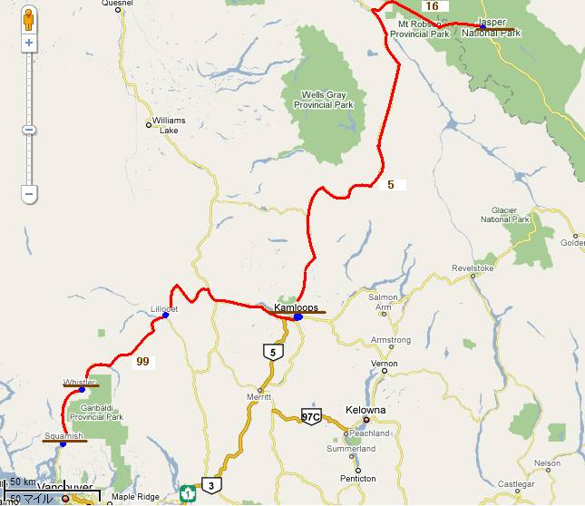
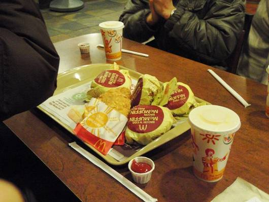
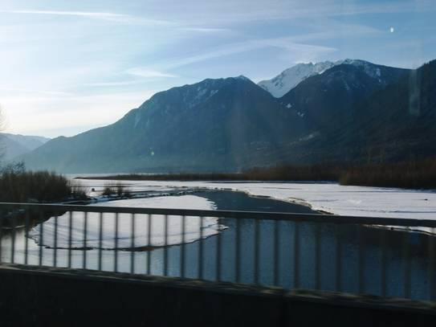
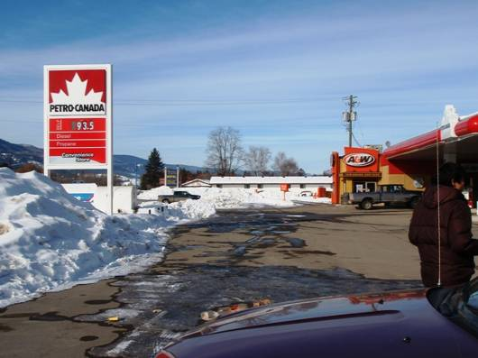
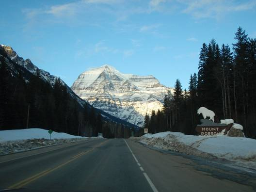
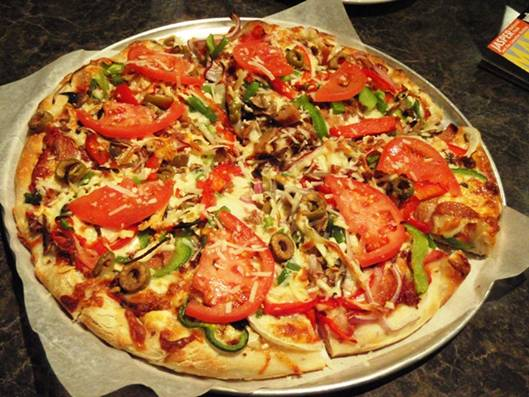

□6日目(2/17)Squamish→Jasper

いよいよ住み慣れたスコーミッシュの宿を去るときがやってきた。5泊もすると出て行くのが少し寂しくなる。今日は時間に余裕があまりないので朝食は朝マック。直登がEggMc.Muffinのセットを注文したら、4人分のセットがやってきた。マックは大きさも味も日本のものとあまり変わらないんじゃないのかなという感じだ。

スコーミッシュから99号線をひたすら北上。ウィスラーも通過。朝日を浴びた雪山が美しい。ここからは始めての道となる。Penberton(ペンバートン)という牧場の多い集落を過ぎると、道幅は狭く、路面は悪くなり、くねくねの山道となった。川には氷が張り、雪が積もって真っ白になっている。それでも道路の除雪だけはしっかりとしてある。しかし道路には”Avalanche Area”(雪崩地区)と書かれた標識があちこちに立っており、今にも落石が起きそうな斜面が、何の落石対策もされずに道路脇にそびえ立っている。こんな大自然の山の中を走っていくと完全に凍りついた美しい湖が。周りの霧氷もすばらしい。ここで写真休憩。気温は-15度を示している。


ヘアピンカーブもあった厳しい山道を下り終えると、Lillooet(リルエット)の街に出る。この辺りでは雪は少なくなってきている。赤茶けた色の岩盤が川に浸食され、大きな深い谷を作っているところがリルエットである。ここからは谷沿いに付いている河岸段丘上のなだらかな丘陵地の道を進む。所々でウシやウマの放牧が行われ、雪に覆われた広大な農場も現れるが、集落の付近に集中している。数十キロも間隔が開いている集落間には、道路以外に人の手の入っていない大自然がずっと広がっている。給油のためCache Creek(キャッシュ･クリーク)という町のスタンドで休憩。カナダのガソリンスタンドには、必ずコンビニエンスストアのような店があり、ガソリン代もこの店のカウンターで支払う。


キャッシュ･クリークからは、カナダの大陸を東西に縦断しているハイウェイ1号線”Trans
Canada Hwy.”(トランスカナダ･ハイウェイ)に乗る。ここからは100km/h制限の快走路だ。グランドチェロキーのオートクルーズ機能を活用し、スピード調節は車におまかせ。雪化粧の大自然と小さな集落を交互に見ながらひたすら進み、Thompson River(トンプソン川)という大きな川が見えてくると、Kamloops(カムループス)の街は近い。


カムループスはブリティッシュコロンビア州では大きな町の部類に入る。この街で昼食を･･･と思っていたら、1号線は街の中には入らず迂回。そのまま今日の目的地のJasper(ジャスパー)へと続くYellowheadHwy.(イエローヘッド･ハイウェイ) 5号線に進んでしまった。地図で確認しても、この先には飲食店がありそうな街があまりない。地図に載っている人口500人未満の集落でも気づかずにスルーしていることもしばしば。お腹がかなり減ってきたころにClearwater(クリアウォーター)という町でA＆Wというバーガー店を発見！A＆Wはカナダではかなりメジャーなファストフード店のようである。バーガー類のメニューは、”Mama Burger”(ママ)、”Uncle Burger”(おじさん)など家族関連のネーミング。Uncle Burgerはブ厚いサーロインハンバーグが挟んであり、かなりのボリューム。サイズもマックより大きいと見た。篠田の”Grandpa Burger”(じいちゃん)はブ厚いハンバーグの3枚重ね。カナダ的ボリュームに1個で大満足。



州立公園指定の美しい山並みを見ながら、さらに5号線を進む。しばらく曇っていたが、次第に太陽が顔を見せ、雪山が輝きだした。ひたすら走ることすでにもう夕方。イエローヘッド･ハイウェイは5号線から16号線に移り行く。ここからはMt. Robson(マウント･ロブソン)州立公園。道路の正面には、カナディアンロッキー最高峰、標高3954mのロブソン山が雄雄しくそびえ立っているのが見えてきた。三角形の形をしており、雪と岩の横縞模様が特徴的である。そしていよいよロッキーを越える。長大なロッキー山脈の山越えというからには、険阻な山道を想定していた。しかし、速度制限は90～100km/hのまま。ほぼ平坦な直線がずっと続いていく。おかしいなと思っているころに、イエローヘッド峠を越え、Alberta(アルバータ)州の境界を示す看板が出現。ロッキー越えは拍子抜けするほど楽勝だった。道路上には雪もなく、オールシーズンタイヤで大丈夫かと考えていたのだが。


ジャスパーの町にたどり着いた時には、辺りはもう暗くなっていた。人気のないひっそりとしたジャスパー国立公園の森の中で、町の明かりが見えたときはホッとした。給油完了後、とりあえず今夜の宿となるJasper International Hostelを探すことに。しかし、調べてきた場所に行ってみても宿がない。町の人に聞いてみると、ジャスパーの町を出て、南の山麓にあるとのこと。早速地図を見直すと確かに載っている。しかしここから遠いので、先に夕食をとることに。近くのピザ屋に入り、12インチのピザをみんなで1枚注文。焼きたてで具たくさんのピザはとってもおいしかった。


町を出て南に向かい、真っ暗な山道を登っていくと、ようやく宿を発見。チェックイン完了。ユースホステルなので、寝室は大部屋にたくさんの二段ベッドが並べられているだけ。しかもベッドにカーテンすら付いていない。冬季なので、他の客は少なかったが、夏季には人気があり、予約ですぐに埋まるらしい。こんなところではくつろげない上、荷物も心配になる。そんなことで、もう一度ジャスパーの町に行くことに。雪とイルミネーションが彩る小さな町を車でぐるっと回わった。ホテルの数が非常に多い。しかし、夜遅いので、大体の商店はしまっていた。一通りジャスパーの町の雰囲気を楽しんだ後、まだ開いていたコンビニ風の店に入った。お菓子や明日の朝食を買ってから宿へと戻った。